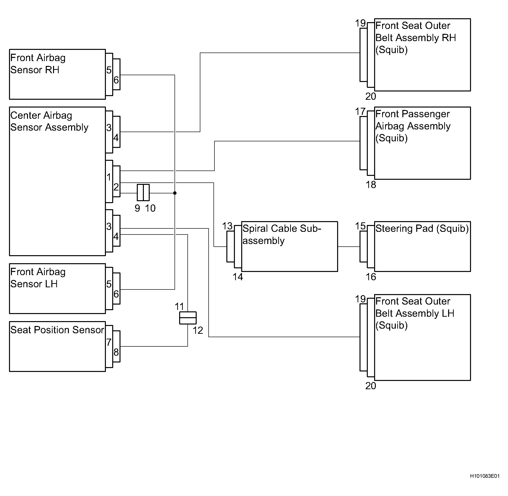
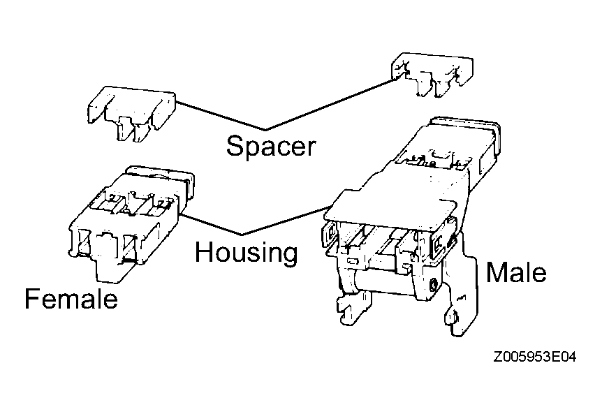
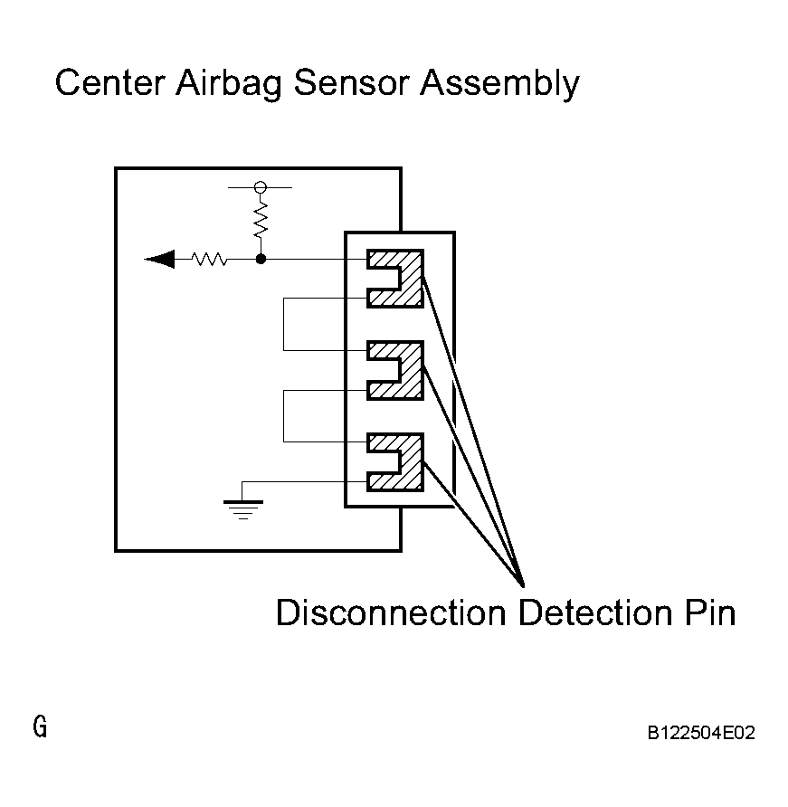

Precaution (2005/07-2005/12)
- The vehicle is equipped with a Supplemental Restraint System (SRS), which consists of a steering pad, front passenger airbag, seat belt pretensioner, center airbag sensor, front airbag sensor and seat position airbag sensor. Failure to carry out service procedures in the correct sequence could cause SRS parts to unexpectedly deploy and possibly lead to serious injuries. Furthermore, if a mistake is made when service SRS parts, they may fail to operate when required. Before performing servicing (including installation/removal, inspection and replacement of parts), be sure to read the following precautions.
- Before starting work, wait at least 90 seconds after the ignition switch is turned OFF and after the cable of the negative (-) battery terminal is disconnected. (SRS parts are equipped with a backup power source. If work is started within 90 seconds of turning the ignition switch OFF and disconnecting the cable from the negative (-) battery terminal, SRS parts may deploy.)
- Do not expose SRS parts directly to hot air or flames.
- Malfunction symptoms of SRS parts are difficult to confirm. DTCs are the most important source of information when troubleshooting. During troubleshooting, always confirm DTCs before disconnecting the cable from the negative (-) battery terminal.
- For minor collisions where SRS parts do not deploy, always inspect the SRS parts.
- Before repair work, remove airbag sensors as necessary if any kind of impact is likely to occur to an airbag sensor during the operation.
- Never use SRS parts from another vehicle. When replacing SRS parts, replace them with new ones.
- Never disassemble or attempt to repair SRS parts.
- If an SRS part has been dropped, or if there are any cracks, dents or other defects in the case, bracket or connector, replace the SRS part with a new one.
- Use an ohmmeter/voltmeter with high impedance (10 kΩ/V minimum) for troubleshooting the electrical circuits.
- Information labels are attached to the periphery of SRS parts. Follow the cautions and instructions on the labels.
- After work on SRS parts is completed, perform the SRS warning light check (RS-37).
- When the cable is disconnected from the negative (-) battery terminal, the memory settings of each system will be cleared. Because of this, be sure to write down the settings of each system before starting work. When work is finished, reset the settings of each system as before. Never use a backup power supply from outside the vehicle to avoid erasing the memory in a system.
- If the vehicle is equipped with a mobile communication system, refer to the precautions in the INTRODUCTION section (see PRECAUTION ).
- HANDLING PRECAUTIONS FOR AIRBAG SENSOR
HINT:
In this section, the center airbag sensor, front airbag sensor LH, and front airbag sensor RH are collectively referred to as the airbag sensors.
- Before replacement of the airbag sensor, wait at least 90 seconds after disconnecting the cable from the negative (-) battery terminal.
- When connecting or disconnecting an airbag sensor connector, ensure that all of the sensors are installed in the vehicle.
- Do not use the airbag sensors if they have been dropped.
- Do not disassemble the airbag sensors.
- INSPECTION PROCEDURE FOR VEHICLE INVOLVED IN ACCIDENT
- When the airbag has not deployed, confirm the DTC by checking the SRS warning light. If there is any malfunction in the SRS, perform troubleshooting.
- When any of the airbags have deployed, replace the related airbag sensor and inspect its normal operation.
- SRS CONNECTORS

Courtesy of © TOYOTA, LICENSE AGREEMENT TMS1002SRS CONNECTOR TYPE AND APPLICATIONConnector Type Application Terminal Twin-lock Mechanism Connectors 2, 4, 6, 8, 10, 12, 13, 17, 20 Activation Prevention Mechanism Connectors 2, 4, 7, 14, 16, 18 Electrical Connection Check Mechanism Connectors 1, 2, 3, 4 Half Connection Prevention Mechanism Connectors10, 13 Connector Lock Mechanism Connector 15, 19 Connector Position Assurance Mechanism Connector 6 - All connectors in the SRS are yellow (to distinguish them from other connectors). Some connectors have special functions and are specially designed for the SRS. These connectors use durable gold plated terminals, and are located as shown above to ensure high reliability.
- Terminal twin-lock mechanism:
Each connector has a two-piece component consisting of a housing and spacer. This design enables the terminal to be locked securely by 2 locking devices (the retainer and lance) to prevent terminals from becoming unseated.
- Activation prevention mechanism:
Each connector contains a short spring plate. When the connector is disconnected, the short spring plate automatically connects the positive (+) terminal and negative (-) terminal of the squib.

Courtesy of © TOYOTA, LICENSE AGREEMENT TMS1002 - Electrical connection check mechanism:
This mechanism electrically checks that the connectors are connected correctly and completely. The electrical connection check mechanism is designed so that the disconnection detection pin connects with the diagnosis terminals when the connector housing lock is locked.

Courtesy of © TOYOTA, LICENSE AGREEMENT TMS1002 - Half connection prevention mechanism:
If the connector is not completely connected, the connector is disconnected by the spring.
- Connector lock mechanism:
Locking the connector lock button connects the connector securely.
- Connector position assurance mechanism:
Only when the housing lock (white part) is completely engaged, the CPA (yellow part) slides, which completes the connector engagement.
- Terminal twin-lock mechanism:
- When the vehicle is involved in a frontal collision in the hatched area (Fig 9) and the shock is larger than the predetermined level, the SRS is activated automatically. The safing sensor is designed to go on at a smaller deceleration rate than the airbag sensor. As illustrated in Fig 9, ignition is caused when current flows to the squib, which happens when the safing sensor and the deceleration sensor go on simultaneously. When a deceleration force acts on the sensors, 2 squibs in the driver airbag and front passenger airbag ignite and generate gas. The gas discharging into the driver airbag and front passenger airbag rapidly increases the pressure inside the bags, breaking the steering pad and instrument panel. The deployment of the bags then ends, and the bags deflate as the gas is discharged through discharge holes at the bag's rear or side.
- All connectors in the SRS are yellow (to distinguish them from other connectors). Some connectors have special functions and are specially designed for the SRS. These connectors use durable gold plated terminals, and are located as shown above to ensure high reliability.
- DEPLOYMENT CONDITION
- When the vehicle is in a collision and the shock is greater than the specified value, the SRS is activated automatically. The safing sensor and deceleration sensor are built into the center airbag sensor. The safing sensor is designed to be turned on at a smaller deceleration rate than the deceleration sensor. The deceleration sensor determines whether or not SRS deployment is necessary based on signals from the front airbag sensor. Current flows to the squibs to deploy the SRS when the conditions shown in the illustration below are met.
- DISCONNECTION OF STEERING PAD
- CONNECTION OF STEERING PAD
- Connect the connector.
- Push the lock button in to connect the holder (with connectors). Check that it locks and that a "click" sound is heard.
- DISCONNECTION OF CONNECTOR FOR FRONT AIRBAG SENSOR
- Push down the housing lock (white part) and slide the CPA (yellow part) (at this time, the connector cannot be disconnected yet.)
- Push down the housing lock (white part) again and disconnect the connector.
HINT:
Do not push down the A part shown in the illustration when disconnecting.
- After disconnecting the connector, check that the position of the housing lock (the white part) is as shown in the illustration.
- CONNECTION OF CONNECTOR FOR FRONT AIRBAG SENSOR
- Before connecting the connectors, check that the position of the housing lock (the white part) is as shown in the illustration.
- Be sure to engage the connectors until they are locked (when locking, make sure that a click sound can be heard).